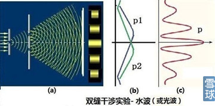
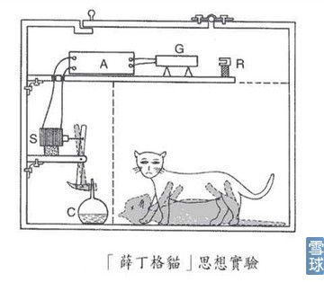

今天醒来，躺在床上把这篇演进看完才起床。简直就是上帝送给我们图形技术、趋势研究的大礼。我以前很多想表达而无法用语言准确表达的技术分析、盘感等等，读完这篇演讲后有豁然开朗之感。人类真的是太牛逼了。
特此分享
朱清时，中国科学技术大学前校长、中国科学院院士1994年获海外华人物理学会亚洲成就奖和汤普逊纪念奖。
朱院士介绍了二十世纪人类科学的最高成就——“量子力学”，指出人的意识不但和客观世界不能分开，反而可能是自然科学理论中最为基础的，客观物质世界正是意识产生的结果。
朱清时演讲全文：
南老师（南怀瑾）说，人的每个念头、每做一件事，都被记录在（第八识）的种子里头了，这些种子一旦有缘就会发芽开花。
意识怎么会是量子？量子这个东西大家可能都觉得很神秘，实际上一点儿也不神秘。二十世纪被最精密地证实的自然科学理论就是量子理论。
二十世纪有大量的科技成就和社会的技术发展，都是跟量子理论有关的，像核能、半导体，我们现在用的手机、计算机，这些都和量子理论有关。下面我再简要介绍量子理论。
那么意识是什么呢？学自然科学的人都知道，意识是被科学拒之门外、唯恐避之而不及的东西。
我们这代人都知道一句老话，叫做：“科学研究的是不以人的意志为转移的客观规律。”
但是人类发展到今天，发现意识是规避不了的。
量子力学的诡异现象
这部分讲量子力学。当然我不是讲授量子力学，我力求向南老师学习，把它讲得通俗，大家都易懂。
量子力学这个理论非常之怪，刚才说了二十世纪人类物质进步的每一个重大环节，都跟量子力学有关。
量子力学也是自然科学史上被实验证明最精确的一个理论，但是量子的观念，没有人能够理解。我说的没有人能够理解，绝不是指像我们这个层次的人，而是说连量子力学的创始人都不能理解。
量子力学创始人有两个，一个是爱因斯坦，一个是玻尔。
他们一辈子都在争论量子力学的问题，“世纪大辩论”，结果还是不能理解。
玻尔就说了，如果谁说他懂了量子力学，他就没有真懂，因为量子力学连我们都没有搞懂，这就是他们的观点。
那么量子力学最不好懂的是些什么问题呢？我先把量子力学中人们最不好懂的东西介绍给大家，而最不好懂的东西最后恰好是证明了：
意识不能被排除在客观世界之外，一定要把意识加进去你才能够认识搞懂它。
1、迭加态与坍缩
量子力学的第一个诡异现象叫做态迭加原理和坍缩。
为了解释量子力学观念，我先说说普通人的日常经验。
一个物体在某个时刻，一定会处在某个固定的状态。
比如说，我的女儿现在在客厅里面，或者说我的女儿现在不在客厅里面，两者必居其一。只有一个对，要么在客厅里头，要么不在客厅里头。这就是普通人的关于状态的概念。
一般人认为客观物体一定要有一个确定的空间位置，这种存在，是不以人的意志为转移的、是客观的。这个客观的定义，所有人都理解，而且认为这是天经地义的。
但在量子力学里就不一样了。
量子力学的基本原理就是微观粒子可能处在迭加态，这种状态是不确定的。
例如电子可以同时处于两个不同地点，电子有可能在A点存在，也可能在B点存在，电子的状态是在A点又不在A点的迭加。
这个话大家就不太理解了。聪明的人会说，你说电子既在A点又不在A点，就像说你的女儿既在客厅又不在客厅，女儿在不在客厅，你一看不就明白了吗？这还用辩论什么？
但是恰好量子力学就认为，你要去看这个女儿在不在，你就实施了观察的动作。
你一观察，这个女儿的存在状态就坍缩了，她就从原来的，在客厅又不在客厅的迭加状态，一下子变成在客厅或者不在客厅的唯一的状态了。
所以量子力学怪就怪在这儿：你不观察它，它就处于迭加态，也就是一个电子既在A点又不在A点，既在B点又不在B点。好，你说我去观察一下它在A点还是在B点。
你一观察，它这种迭加状态就崩溃了，它就真的只在A点或者真的只在B点了，只出现一个。
那有人就会说了：你这是诡辩，你怎么知道电子不观察它的时候，它既在A点又不在A点呢？
好，这就是量子力学发展过程中，很多实验确证的事情，其中一个最著名最重要的干涉实验

我先说一下干涉实验的概念（如上图）。如果有一个波，经过了两个狭缝，出来就变成两个子波了，这两个子波在随后传播过程中就会出现干涉。
干涉的意思就是这两个子波在每个点都迭加，在有些点上两个波的运动方向相同，波的振幅就加强；在有些点上两个波的运动方向相反，振幅就减低，或者抵消为零。
所以最后你观察到的波就是一些干涉条纹。如果看到干涉条纹，你就知道你观察到的是个波，而且这个波是在两个狭缝同时出现的，也就是既在A点又在B点，因为只有这样的情况，波才能出现干涉。
如果用电子来做实验（如上图），当每次只发射一个电子的时候，这个电子通过双狭缝打到电子屏上，激发出一个小亮点，这是电子的粒子性。
但是事先也不知道电子会出现在屏幕上的什么地方，结果多次重复，经过大量的观察发现，这些电子不是完全没有规律的。它有时出现在这里，有时出现在那里，在某些地方出现的可能性要大一些，在另一些地方则小一些。
电子的规律就是，它出现频率高的地方，恰好是波动规律所预言的干涉条纹的亮处，而它出现频率低的地方，对应于干涉条纹的暗处。
所以，大量的实验证明：电子尽管是粒子，但是其运动像个波，而且每个电子必须同时出现在两个小孔。
因为只有同时出现在两个小孔，它才能干涉。就如刚才说的，你没有观察它的时候，电子一定不会取一个确定的状态，它一定是所有状态都要同时存在，这样它才能干涉起来。
这就是量子力学诡异的地方。这个性质，随后有很多很多应用。
刚才说了，电子一定要同时存在于两个可能的状态，电子才能与自己干涉起来。
那么如果我们观察它，比如在两个狭缝处设置探测器，电子会怎么样呢？
电子一被观测，就只出现在一个狭缝上了，干涉条纹立刻消失。这个状态就叫做波函数的坍缩。
就是你一观察，电子就在一个确定的地方出现了。
那么有些人就想，我观测它出现在确定的地方，它是不是早就出现在这个确定的地方，只不过我们不知道而已？
不对，刚才的干涉实验告诉我们，在没有干涉之前，它肯定出现在所有地方。
假如, 当我们不观察时，电子真的存在于某个地方，它便只能通过一道狭缝，这就不能解释实验中观测到的干涉条纹。
其实，严格的实验已经完全排除了这种可能。电子在没有观测的时候，没有确定的状态。所以这件事是量子力学最诡异的事情。
懂了这个，就懂了量子力学最诡异的东西，而且随后我们就能来证明：量子力学离不开意识，意识是量子力学的基础。
搞物理学的人开个玩笑，说观测为什么能够改变电子的状态呢？就好像一个男的和一个女的在恋爱时，不知道结婚的结果是好是坏，可能是好也可能是坏，是好与坏的一种迭加状态。这个时候你想要确定是好是坏怎么办呢？只有结婚试试吧。一结完婚，状态就改变了，就再也不是原来的状态了，变成只有一个状态了，要么好要么坏。
刚才我讲了半天，实际上就是和这个例子一样。在观察之前，大家都不知道电子处于哪个状态。你去观察一下，就像结婚了，那电子就出现在一个确定的状态上了。这就是观测对系统的影响。
2、单体的迭加态：薛定格的猫---证明测量的核心是人的意识
刚才说的是量子力学第一个诡异之点，现在我们来看看这个诡异之点往下推论，能够推出什么结果。最后结果会使大家认识到，意识是量子力学的基础，物质世界和意识不可分开的。
这个实验是量子力学的创始人薛定谔提出的，被称为“薛定谔的猫”。薛定谔的本意是想批驳量子力学和量子力学的态迭加，他认为一个东西既存在这个状态，又存在那个状态，像女儿即在客厅，又不在客厅一样，那是荒谬的。
他就想了个办法来批驳量子力学，结果没有批驳好，最后反而证明了量子力学最诡异的地方，也就是意识和物质不可分开。

现在我来说薛定谔的实验是什么（如上图）：把一只猫放进一个封闭的盒子里，然后把这个盒子接到一个装置上，这个装置包含一个原子核和一个毒气设施。原子核有百分之五十的可能性发生衰变，衰变的时候就会发射出一个粒子来，这个粒子一发出来就会触发毒气设施，毒气一触发就会杀死这只猫，这是他想象中的一个实验。
根据刚才说的量子力学的态迭加原理，没有观察的时候，原子核是处于已经衰变和没有衰变的迭加状态，就是它既可能衰变了又没有衰变，它是两种状态的迭加，就像电子既在A点又不在A点一样，这个原子核既衰变又没有衰变，50%几率衰变，50%几率不衰变。这个时候猫的状态是可能活着，也可能死了，就是说猫也处于这种既死又活的迭加状态。
猫可能处于这种状态吗？聪明人可能会说：那你打开盒子一看不就行了吗？但是打开盒子一看，就是作了观测，猫就只能是死或者活了。
这个问题一提出来，物理学家一个个都惊呆了，原来以为只有微观世界才有这种态迭加，就是状态不确定，既处于这个状态，又不处于这个状态。
现在宏观世界也一样了，猫不就是这样吗？有一只既死又活的猫。
大家都不承认有这种状态。但是量子力学的诡异之点，量子力学的态迭加原理就是说：你在观察之前，猫就是处于既死又活的状态。这个问题争论了很长时间。怎么办？
量子理论很确定，这是毫无疑问的，如果没有揭开盖子没有观察，那薛定谔的猫的状态是死与活的迭加，这只猫永远处于同时是死又是活的迭加态。这与我们的经验严重违背。
这个实验实际上就是“女儿在客厅里，女儿不在客厅里”变了个样子说出来。
这个猫是死了还是活着？既死又活是同时存在的，量子力学就认为两者同时存在。那么怎么可能既死又活同时存在呢？人不能想象这种状态，于是大家就把这个实验进一步讨论下去。
1963年获得诺贝尔物理学奖的维格纳想了一个新的办法，他说：我让个朋友戴着防毒面具也和猫一起呆在那个盒子里面去，我躲在门外，对我来说，这猫是死是活我不知道，猫是既死又活。
事后我问在毒气室里戴防毒面具的朋友，猫是死是活？朋友肯定会回答，猫要么是死要么是活，不会说是半死不活的。
他这个说法一出来大家就发现，问题在哪儿呢？
一个人和猫一起呆在盒子里，人有意识，意识一旦包含到量子力学的系统中去，它的波函数就坍缩了，猫就变成要么是死，要么是活了。
也就是说猫是死是活，只要一有人的意识参与，就变成要么是死，要么是活了，就不再是模糊状态了。
维格纳总结道，当朋友的意识被包含在整个系统中的时候，迭加态就不适用了。即使他本人在门外，箱子里的波函数还是因为朋友的观测而不断地被触动，因此只有活猫或者死猫两个纯态的可能。
维格纳认为，意识可以作用于外部世界，使波函数坍缩是不足为奇的。
维格纳这个认识已经是量子力学界的共识了，确实只能这样认为。
因为外部世界的变化可以引起我们意识的改变。
大家想过没有，牛顿第三定律说作用力与反作用力是相等的。
我们的意识能够受外部世界的影响而改变，大家都觉得没有问题，对吧？
人的意识就是受外界客观世界的影响改变了，随时都在变化。
那为什么客观世界就能改变意识，意识就不能改变客观世界呢？
他就说意识是能够改变客观世界的，意识改变客观世界就是通过波函数坍缩，就是使不确定状态变成确定的状态，这样来影响的。
所以波函数，也就是量子力学的状态，从不确定到确定必须要有意识的参与，这就是争论到最后大家的结论。
自然科学总是自诩为最客观、最不能容忍主观意识的，现在量子力学发展到这个地步，居然发现人类的主观意识是客观物质世界的基础了。
因为量子力学是我们客观物质世界最基础的理论。
刚才说过了，二十世纪人类技术进展都跟量子力学有关，而且量子力学经过了最精确的实验验证。
量子力学的基础就是：从不确定的状态变成确定的状态，一定要有意识参与。
这是物理学的一个重大成就。到此为止我讲的全都是物理学。
大家有兴趣的可以去买关于薛定谔的猫等量子力学诡异现象的通俗读物，现在出的这种书已经很多很多了，我讲的这些都是上面的说法。
到这一步，我们对量子力学的诡异已经有所了解了，诡异的基础实际上是：意识和物质世界不可分开，意识促成了物质世界从不确定到确定的转移。
这点很像在佛学中，一个念头一下子使物质世界产生出来了，这样的概念。物质世界产生出来实际上是从不确定一下子变成确定的，这两者很类似。
刚才讲了量子力学两个诡异之点，诡异之点到最后就达到了物质世界离不开意识，意识是物质世界的基础，意识才使物质世界从不确定到确定，发生这样的坍缩，也就是变化。
3. 多体的迭加态：量子纠缠
现在再来讲量子力学第三个诡异之点，这个和前面讲的状态有关，是它们的直接结论，叫做量子纠缠。
量子纠缠与“薛定谔的猫”是类似的，只不过“薛定谔的猫” 讲的是同一个东西处于不同的状态的迭加，量子纠缠讲的是如果有两个以上的东西它们都处于不同的状态的迭加，它们彼此之间有什么关联。
这就是量子纠缠。
量子纠缠最典型的例子是：如果有一个原子在空中爆炸，它变成了两个碎片向两个方向飞去。这两个碎片的状态一定有明确的关系，比如角动量守恒就告诉我们，这两个碎片的状态，如果一个角动量是正的，另一个角动量一定是负的，这样它们的和才是零。
在没有被人检测的时候，两个碎片都是处于不确定的状态，比如它们的角动量既可能是正，也有可能是负。而一旦被人检测，受测的碎片马上选择一个确定的角动量，或者正的，或者负的；另一个未检测的碎片，也马上选择与之相反的状态，或者正的，或者负的。
这就是刚才讲的两个的状态从不确定到确定。
关于这种关联，可以打个比方，我们从北京买了一双手套，把手套中的一只寄到香港，另一只寄到华盛顿，那么寄到香港的是左手戴的还是右手戴的？谁都不知道，如果香港的人收到了打开一看，是左手的，那华盛顿的人不用看就知道收到的是右手的，因为手套是左右配对的，这是个规则。
一旦寄出去了，寄的过程中不确定，但是一个人只要观测了他收到的手套是左手的还是右手的，另一个人不用观测就知道了。这就是纠缠的一个例子。
大家可以说，手套在寄的过程中，只不过大家不知道而已，是左手右手早就确定了的。
这就和“女儿在客厅里还是不在客厅里”一样，大家觉得在不在客厅里是早就确定了的，只不过你没有去观察。
手套也是一样，大家会认为，你看没看它没关系，它早就确定了。
但量子力学大量实验证明，如果把同一个量子体系分开成几个部分，在未检测之前，你永远不知道这些部分的准确状态；
如果你检测出其中之一的状态，在这瞬间其他部分立即调整自己的状态与之相应。
这样的量子体系的状态叫做“纠缠态”。
就好比这个手套在寄出以后，在还没被观测之前，它是不是确定呢？肯定不确定。只有在你确定了其中某一个的状态，另一个的状态立刻就变化了，也变得确定起来了。这种关联就叫作量子纠缠。
大家也许很难理解这个纠缠，说实话，这个已经超出了我们人类的理解能力的范围之外，你只能去试图想他、接受他，跟我们日常生活中的客观经验已经不符了。
我再举个例子。人跟人之间的关系也是有这种纠缠关系，比如我跟我儿子之间的关系。我们一个父一个子，如果有一天媳妇生了一个孩子，虽然我完全不知道，但是我也马上晋级为爷爷了。晋级跟我知不知道没有关系，儿子晋级了，做爸爸了，我作为爷爷的状态也就马上明确了，这个也是一种纠缠。
这个例子还说明纠缠的一个重要特点：纠缠一方得到的任何信息，另一方也会马上感到，不需要信息传递。这一点很重要，后面要用到。
这种纠缠的例子大家还容易理解，但是对于物质世界的纠缠大家不太容易理解，原因就在于大家的观念都认为一个事物永远都有个确定的状态，但是量子力学发现微观世界的事物，在还没被观察之前没有明确的状态。
大家记住量子纠缠就是对于多个微观物体，在被观察之后，它们的状态会从不确定到确定，作一个有关联的突变。
量子纠缠现在已经变成一个工具了，这个工具可以用来传输东西、传输信息。
我先来说，非量子力学的经典物理学的信息传输。比如一位女士有一本书，或者任何信息，她想传输到一位男士手上去，这个男士在纽约，两个人根本看不见。
经典物理学的传输方式是女士拿扫描仪来扫描这本书，扫描之后通过网络系统，把信号传到男士那去，男士再把它打印出来，这就是经典信号传输了。
但经典信号传输有个大缺点，就是不完全。因为一本书在扫描时候只能得到它的部分信息，这本书的颜色、纸张的厚度、纸张的原子分子结构那就传不过去，传的只是照相的图像，这就是经典物理学的信号传输。
量子信号传输就完全不同了。量子信号的传输利用量子纠缠态。
如果这位女士与男士离得很远，一个在火星上，一个在地球上，他们可以用量子纠缠来传输信息。
如果女士在A点，她有光子A；男士在B点，他有光子B。光子A和B处于纠缠态，对A光子施加的任何作用或给她的任何信息，B光子都马上得到。
如果把这本书的全部信息作用于A光子，那么B光子也马上得到。这就是量子隐形传输中，最后的B点得到的是和原来完全一样的信息。
经典物理传输后所复制出来的，只是纸上图像的信息，没有复制出任何“实体”本身。
而量子隐形传输却是从“实体”得到完整的信息，从而复制出了“实体”本身，尽管只是一个小小的量子态！这个过程要讲的话比较复杂一点，我就舍弃这些细节。
这个工作现在在全世界做得最领先的是欧洲国家，然后就是中国。中科大有个年轻教授叫潘建伟，他做这个在全世界很有名，做得很好。这个量子隐性传输能够实现，就使得人类有这种可能：
可以把在地球上某个东西的全部信息传到火星上去，而且瞬间就传播了。现在传播的是某个东西的全部信息，总有一天能实现把一个人的全部信息传递到火星上去，然后在那个地方用原子组装出来，不就变成传输了一个人了吗？
这个超远距离隐性传输，就类似于中国古典小说中的幻想。
我讲这个，主要想让大家理解并记住，如果两个地方的物质处于纠缠态，从纠缠的一方的所有信息可以瞬间传递到纠缠的另一方去，这种传输没有时间空间的限制，是瞬间传播的。
这是量子力学第三个诡异的地方。
意识是量子物理现象
因此是念头产生了“客观”，念头就是测量，客观世界是一系列复杂念头造成的。
所以我们说人的念头和量子力学的测量很类似，意识在不测量的时候是空空灵灵的、清清楚楚的、没有产生任何妄想杂念、是对境无心的，看花不是花。
但是一旦你产生念头了，对它进行测量了，于是花就固定为一种形态而跳出来了，你就认出它是花了。
这就是人的意识。这就是意识和量子力学测量的类似之处。
在量子物理中，这种没有确定的状态，一被观测，也就是人的意识一参与，基本粒子的波函数就开始坍缩了，电子就会出现在个确定的位置，就出现某种客观实在，所以客观实在产生于意识参与的测量。
在量子力学中，物质是由测量而产生的，而起心动念的实质我们也可以把它叫做一种测量。
起心动念的时候意识本身就不再自由了，它突然就坍缩到个具体的概念之上了。
也就是说，整个世界也都这样，一旦有了意识，才可能有确定的状态出现。
但这个问题太大了，究竟怎么理解，物理学还远远没有走到这一步。
我想，把心和意识挂钩起来，而在量子力学看来，一切是意识产生的结果，那这个意思就比较接近了。
好，谢谢。
 |
朱清时院士：不可思议的量子意识炒的是心 2015-01-20 17:10:38 |
Copyright © 1996-2014 SINA Corporation All Rights Reserved.